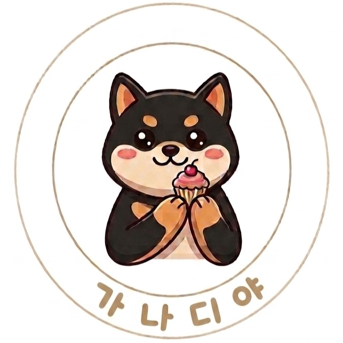

“‘무첨가’, ‘프리미엄’이라는데…
정말 우리 아이에게 괜찮을까?”
좋은 문구는 넘치지만, 원재료·성분·알러젠을 보호자가 직접 확인하고 판단할 방법이 없어요.
반려견 맞춤 식이관리 · 가나디야
증상과 상황을 평소 말투 그대로 알려주시면, 수의영양 문헌에 근거한 기준에 따라 피해야 할 원료를 정리하고 — 밥부터 간식까지 하나의 기준으로 맞춘 식단을 정기 배송합니다.
정확한 진단·처방은 수의사와 상담하세요.
가나디야는 일상 식이 선택을 돕는 서비스입니다.
진단은 병원에서 받았지만, 집에 돌아온 뒤 매일의 식사 판단은 오롯이 보호자의 몫. 많은 보호자들이 같은 고민 앞에 서 있습니다.
좋은 문구는 넘치지만, 원재료·성분·알러젠을 보호자가 직접 확인하고 판단할 방법이 없어요.
밥·간식·영양제 브랜드가 제각각이면, 어디서 문제 원료가 들어오는지 알 수 없어요. 하나의 기준이 필요합니다.
반려견 몫만큼 소량으로 장 보기는 어렵고, 남은 재료는 버려져요. 정성만으로 영양 균형까지 지키기는 더 어렵고요.
보호자의 정성만으로는 영양 균형을 지키기 어렵습니다
홈메이드 레시피 200개 중
필수 영양소 1개 이상 결핍
UC Davis 수의과대학
복수 영양소가 동시에 결핍된
레시피 비율
UC Davis 수의과대학
자가 조리 식단 1,726개 중
영양적으로 완전할 가능성
Dog Aging Project, 2025
복잡한 영양 지식이 없어도 괜찮아요. 딱 세 단계면 충분합니다.
나이, 몸무게, 증상, 수의사 선생님께 들은 이야기까지 — 평소 말투 그대로 적어주세요. 어려운 용어는 몰라도 됩니다.
수의영양 문헌에 근거한 지식베이스가 회피 원료와 주의 영양소를 근거와 함께 정리하고, 그 기준에 맞는 제품만 골라 장바구니에 담아드려요.
같은 기준의 식단이 꾸준히 도착해요. 급여 후 반응을 기록하면 다음 추천이 더 정확해집니다.
가나디야가 직접 만들기 때문에, 우리 아이가 피해야 할 원료를 아예 뺀 구성이 가능합니다.
신선한 원물로 조리해 1회 급여량씩 소분. 피해야 할 원료는 아예 뺀 구성에, 원산지·성분을 투명하게 표기해요.
동결·저온건조 닭가슴살칩, 고구마말랭이, 황태트릿. 민감한 아이를 위한 단일 단백질 안심 간식도 준비돼요.
밥 위에 살짝 얹어 기호성과 영양을 더해요. 물론 토퍼도 같은 알러젠 기준으로 만듭니다.
직접 만들기 어려운 영양제는 같은 알러젠·성분 기준을 통과한 검증된 제품만 선별해 함께 추천해요.
모든 제품은 저지방·단일 단백질·소화 부담 완화 등 성분과 기능 기준으로 구성됩니다.
AAFCO·NRC 영양 표준과 수의영양 문헌을 바탕으로, 근거를 갖춘 추천만 드려요. “왜 피해야 하는지” 근거가 항상 함께 갑니다.
브랜드가 제각각이면 문제 원료가 어디서 들어오는지 알 수 없어요. 가나디야는 직접 만들기 때문에 밥·간식·토퍼를 하나의 알러젠 기준으로 맞춥니다.
급여 후 반응을 기록하면 다음 추천에 반영돼요. 우리 아이만의 데이터가 쌓일수록 식단은 더 정교해집니다.
“진단은 병원에서, 매일의 식사는 가나디야가.”
저희는 수의사 선생님을 대체하지 않고, 보완합니다.
쫑이가 아프고 퇴원한 날, 병원비보다 무서운 건 “오늘 저녁은 뭘 줘야 하지?”라는 질문이었습니다.
사료 뒷면을 아무리 들여다봐도, 검색을 아무리 해봐도, 기준을 알려주는 곳은 어디에도 없었습니다. 매 끼니가 불안했고, 그 불안은 보호자 혼자 감당해야 했습니다.
그 막막함을 아는 보호자가, 같은 고민을 하는 보호자를 위해 만듭니다. 근거 있는 기준과 안심하고 줄 수 있는 한 끼 — 가나디야가 준비하는 것은 이 두 가지입니다.
출시 예정 · 예상 가격
아래 가격은 출시 준비 중인 예상 구성이에요. 사전예약하시면 확정 소식을 가장 먼저 알려드립니다.
14,900원부터
월 49,000원대
월 69,000~79,000원대
사전예약하시면 출시 소식과 체험단 우선 모집 안내를 드려요.
사전예약·체험단 신청아니요. 정확한 진단과 처방은 반드시 수의사와 상담하세요. 가나디야는 병원에 다녀온 뒤, 집에서의 일상 식이 선택을 돕는 서비스입니다. 중증이거나 복합적인 상황이 입력되면 수의사 상담을 먼저 안내해 드려요.
AAFCO·NRC 등 공신력 있는 영양 표준과 수의영양 문헌을 근거로 추천 로직을 설계합니다. 추천에는 항상 근거가 함께 제시돼요.
솔직하게 말씀드릴게요. 출시 예정인 화식 밀키트는 ‘보조식(기타사료)’으로 등록되는 제품입니다. 기존 식단에 더하거나 일부를 대체하는 방식으로 시작하시고, 전체 식단 구성은 수의사와 상담해 정하시는 것을 권장해요.
네, 가나디야가 가장 신경 쓰는 부분이에요. 입력해 주신 정보를 바탕으로 회피해야 할 원료를 뺀 구성을 추천하고, 단일 단백질 옵션도 준비합니다. 밥·간식·토퍼가 모두 같은 기준이라 어디서 문제 원료가 들어오는지 걱정을 덜 수 있어요.
현재 체험단 모집과 정식 출시를 준비하고 있어요. 사전예약을 남겨주시면 체험단 모집 소식을 가장 먼저 보내드립니다.
신선 제품은 냉장·냉동 콜드체인으로 배송돼요. 1회 급여량 단위로 소분되어 있어 보관이 간편하고, 남는 재료 없이 급여할 수 있습니다.